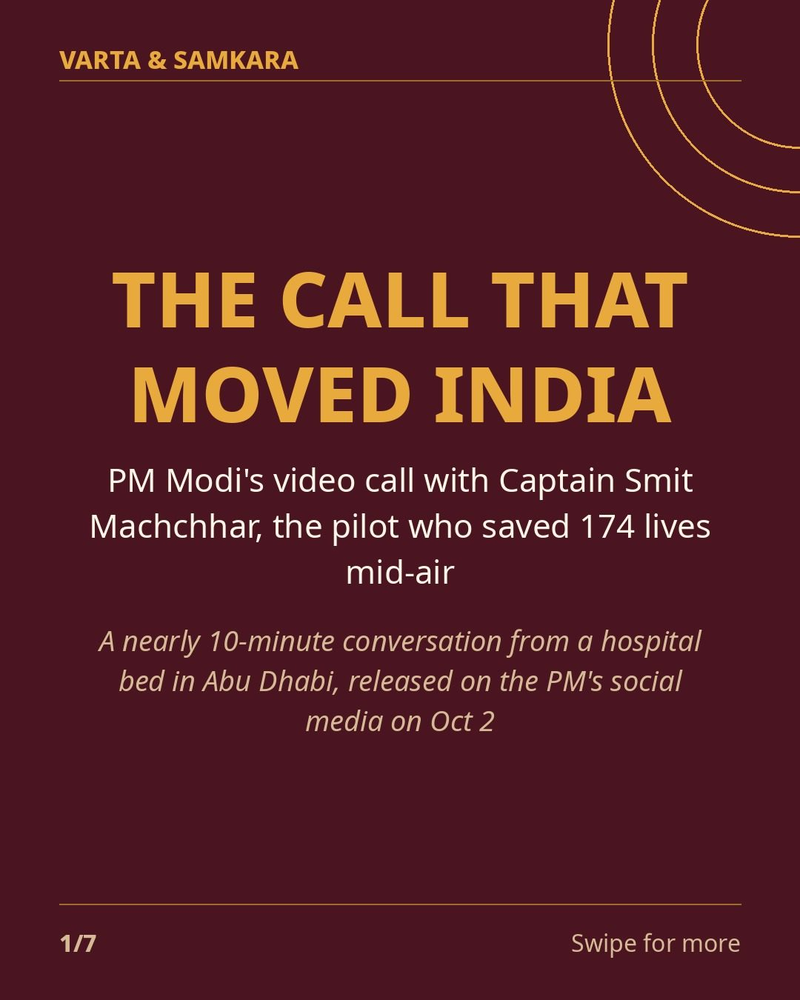
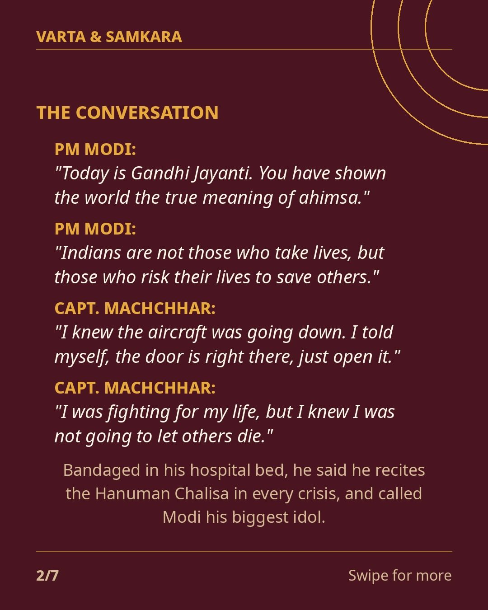
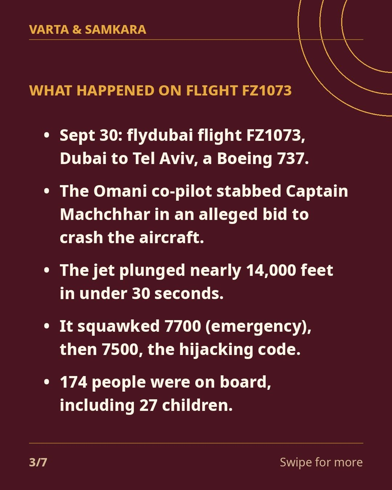
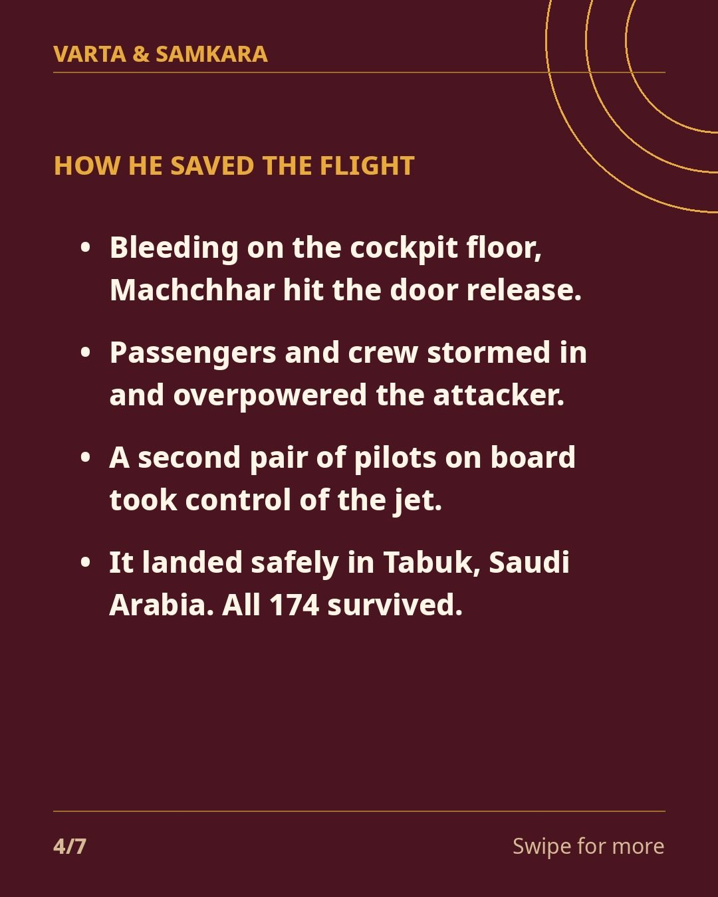
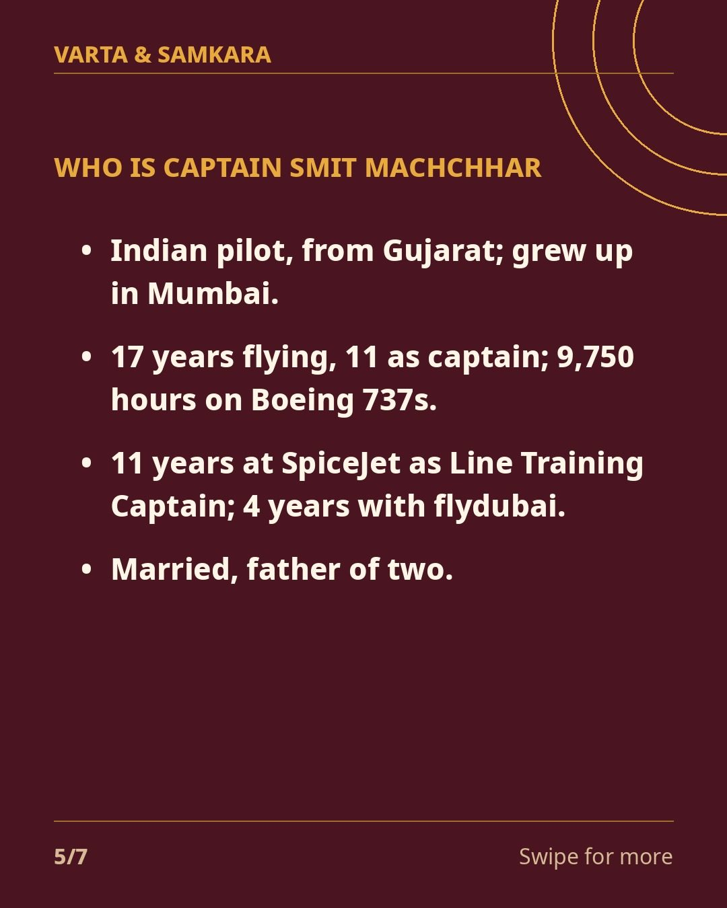
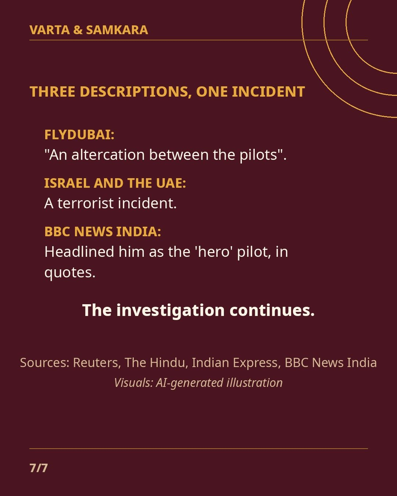

PM Modi spoke to Captain Smit Machchhar from his hospital bed, and the conversation says everything.

On Oct 2, the PM held a nearly 10-minute video call with the flydubai captain, stabbed by his co-pilot in an alleged bid to crash flight FZ1073 from Dubai to Tel Aviv on Sept 30.
What was said: - Modi: "Today is Gandhi Jayanti. You have shown the world the true meaning of ahimsa." - Modi: "Indians are not those who take lives, but those who risk their lives to save others." - Machchhar: "I knew the aircraft was going down. I told myself, the door is right there, just open it." - Machchhar: "I was fighting for my life, but I knew I was not going to let others die." - Bandaged in his Abu Dhabi hospital bed, the captain said he recites the Hanuman Chalisa in every crisis, and called Modi his biggest idol.
The attack: the jet plunged nearly 14,000 feet in under 30 seconds with 174 people on board. Bleeding on the cockpit floor, Machchhar opened the door. Passengers overpowered the attacker, and a second pair of pilots landed the plane in Tabuk, Saudi Arabia.
Trump called him "a hero". Netanyahu called it a "tremendous act of heroism". The UAE called it a "serious terrorist incident". Flydubai called it "an altercation between the pilots". The investigation continues.
In pictures





Source: Reuters, The Hindu, Indian Express, BBC News India
Visuals: AI-generated illustration
Visuals: AI-generated flat-graphic text slides (labeled as such); slide 1 is graphic recap, actual call footage not reposted (copyright)
PoliticsDefence#SmitMachchhar#FlyDubai#PMModi#India#IndianPilot#AviationHero#BreakingNews#CurrentAffairs#Mumbai#Gujarat#HeroPilot#AviationNews
See the original reel / carousel with motion graphics on Instagram.
View on Instagram